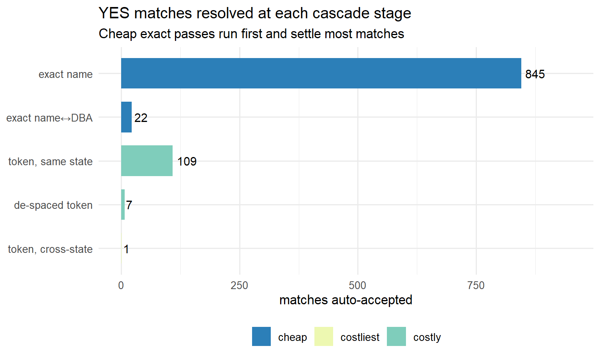

| Original name | Cleaned match key | Tokens compared |
|---|---|---|
| The Smith Family Foundation, Inc. | SMITH FAMILY | SMITH · FAMILY |
| St. Mary’s Hosp. & Health Ctr | SAINT MARY S HOSP AND HEALTH CENTER | SAINT · MARY · S · HOSP · AND · HEALTH · CENTER |
| Boys & Girls Club of N.E. Texas | BOYS AND GIRLS CLUB OF N E TEXAS | BOYS · AND · GIRLS · CLUB · OF · N · E · TEXAS |
| Y.W.C.A. of Helena | Y W C A OF HELENA | Y · W · C · A · OF · HELENA |
| StepForward | STEPFORWARD | STEPFORWARD |
A plain-language overview of how the nonprofit crosswalk is built, what the package decides on its own, and where a human — or an LLM standing in for one — comes in.
1. What the package does
npmatch links organizations from one list (here, federal award and registration records keyed by a UEI) to the IRS Business Master File of nonprofits (keyed by an EIN). It does three things:
- Normalizes both sides so they can be compared fairly.
- Runs a multi-tier matching strategy — strict first, then progressively looser — scoring how well each candidate agrees on name and address.
- Returns a scored, labeled candidate dataset — for every source organization: the candidate EIN(s) it weighed, a 0–1 match score, and a decision label: YES, MAYBE, or NO.
The output is not just “the answer.” It is an auditable table showing which candidates were considered and why one was chosen — the raw material for the review stage.
2. How names and addresses are normalized
Before anything can be compared, “The Smith Family Foundation, Inc.” and “Smith Family Fdn” have to be made to look alike. npmatch cleans each name to a match key, then splits it into tokens (the words the matcher actually compares). Legal suffixes (Inc, Foundation), a leading “The”, and punctuation are dropped; abbreviations are standardized (St → Saint, & → and, Ctr → Center).
Addresses are parsed the same way — a standardized street body, a separated unit, and a ZIP hierarchy (the 5-digit ZIP nests inside a 3-digit region, so a match can degrade gracefully when only partial geography is known).
| Original address | Street key | Unit | ZIP5 | ZIP region |
|---|---|---|---|---|
| 123 North Main Street, Suite 400 | 123 N MAIN ST | SUITE 400 | 63101 | 631 |
| P.O. Box 1234 | PO BOX 1234 | — | 45201 | 452 |
| 45 Elm St Apt 2B | 45 ELM ST | APT 2B | 20814 | 208 |
Corrupted records are tolerated, not silently fixed. Rather than guess a correction, the matcher compares the fuzzy similarity of the two strings, so a typo or a spacing slip in the official record still scores as a near-match. A few real BMF cases the fuzzy layer recovers:
| Source name | BMF record (as filed) | Name similarity |
|---|---|---|
| CENTER FOR TRANSPORTATION AND THE ENVIRONMENT | …AND THE ENVIROMENT (missing N) | 0.99 |
| STEP FORWARD | STEPFORWARD (de-spaced) | 0.98 |
| HILLEL FOUNDATION | HILEL FOUNDATION (dropped L) | 0.91 |
3. The two-stage idea
npmatch is deliberately split into two stages:
Stage 1 (the algorithm) surfaces and sorts the candidates — fast, consistent, cheap across millions of records. Stage 2 (a human or an LLM) confirms the ambiguous cases and gathers the extra evidence the algorithm can’t see.
The three labels are the handoff. YES is confident enough to accept automatically; NO is confident enough to reject; MAYBE means “a match probably exists, but I can’t be sure on name and address alone — please look.” Stage 1’s job is not to be right about everything — it is to be right when it is confident and honest when it isn’t, so Stage 2’s effort goes only where it is needed.
4. The matching cascade (fastest checks first)
The multi-tier strategy runs cheapest-to-most-expensive and stops working on a source org once it is confidently placed. Exact name-and-place agreement is a fast hash lookup; the broad token search (comparing every shared distinctive word) is far costlier, so it only runs on what is still unresolved. On the 1,502 benchmark cases, the four exact passes settle ~88% of all YES matches before the expensive token search runs at all.

5. Reading the output: candidate sets
For each source organization, npmatch surfaces the candidate EINs it considered with everything needed to judge the fit — the candidate’s name, a Name Similarity (0–1), which Name Version matched, the combined Full Match Score, and any veto that fired. Three real examples show the flavor and the pathologies. (The source organization is named above each candidate set so you can see what it is being matched against.)
(a) A clear winner amid noise. The blocking step casts a wide net, so weak look-alikes appear — but the true match dominates and is auto-accepted (YES).
Source organization: The North Carolina Coalition Against Domestic Violence, Inc.
| Candidate | Name Similarity | Name Version | Full Match Score | Why |
|---|---|---|---|---|
| The North Carolina Coalition Against Domestic Violence | 0.95 | name | 0.95 | near-exact name + state → the pick |
| North Carolina (DBA fragment) | 0.86 | dba | 0.59 | shares only the state words → noise |
| NC Guardian ad Litem Assn | 0.67 | token overlap | 0.48 | a few shared words, different org → noise |
(b) An organization vs. its foundation (a family of related EINs). When both the operating org and its affiliated foundation sit at the same place, the foundation is soft-vetoed — surfaced, but held back from auto-accept so a reviewer confirms which EIN is meant.
Source organization: New York Rural Water Association
| Candidate | Name Similarity | Name Version | Full Match Score | Veto | Why |
|---|---|---|---|---|---|
| New York Rural Water Association | 1 | exact | 0.96 | — | the operating org → auto-accept |
| New York Rural Water Foundation | 1 | exact | → MAYBE | affiliate_suffix (Foundation) | the affiliate arm → routed to review, not auto-accepted |
(c) A genuinely ambiguous cluster → MAYBE. Several neighborhood organizations share the distinctive words; none clearly is the source org, so the algorithm refuses to guess and sends the set to review.
Source organization: Young Men’s and Young Women’s Hebrew Association of Washington Heights
| Candidate | Name Similarity | Name Version | Full Match Score | Why |
|---|---|---|---|---|
| Washington Heights Inwood Mask Blocc… | 0.79 | token overlap | 0.78 | top candidate, but not decisive |
| Washington Heights & Inwood Devel… | 0.85 | token overlap | 0.73 | close second |
| Chamber of Commerce of Washington Hts | 0.79 | token overlap | 0.69 | related, weaker |
| Washington Heights Inwood Preserv… | 0.75 | token overlap | 0.67 | related, weaker |
The recurring pathologies: shared generic/geographic words (a), parent/subsidiary/affiliate families (b), and dense clusters of similarly-named local orgs (c). Name and address alone can rank these but cannot always decide them — which is the entire reason for MAYBE.
6. How well it recovers EINs
The goal is to recover as many correct EINs as possible, so the useful way to score the package is as a linkage task — the positive result is “a correct EIN was assigned” — not a “nonprofit vs. not” classification. That reframing keeps one awkward case honest: assigning the wrong EIN is neither a success nor a misclassification of the organization; it is simply a linkage error (it costs both precision and recovery).
The 1,502 hand-verified cases divide by ground truth as follows — and flow through the tiers as the diagram shows, the review stage recovering most of what lands in MAYBE:
| Ground-truth category | Count | Share |
|---|---|---|
| Linkable nonprofit — a findable IRS record exists | 1161 | 77% |
| Nonprofit, but not in the active IRS file | 158 | 11% |
| Not a nonprofit (government / for-profit / person) | 139 | 9% |
| Undetermined | 44 | 3% |
flowchart TD
A["<b>All source orgs</b><br/>n = 1,502"]
A --> Y["🟢 <b>YES</b> · 65.2%<br/>auto-accept<br/>99.6% correct · 0.4% false-pos."]
A --> M["🟡 <b>MAYBE</b> · 15.8%<br/>→ Stage 2 review"]
A --> N["🔴 <b>NO</b> · 18.9%<br/>85.9% correct reject · 14.1% false-neg."]
M --> M1["Confirmed match<br/>61%"]
M --> M2["No match<br/>31%"]
M --> M3["Needs more info<br/>8%"]
N --> N1["Not a nonprofit<br/>43%"]
N --> N2["Not in active BMF<br/>34%"]
N --> N3["False negative<br/>14%"]
N --> N4["Undetermined<br/>9%"]
classDef yes fill:#c7e9c0,stroke:#31a354,color:#111;
classDef maybe fill:#fee391,stroke:#d95f0e,color:#111;
classDef no fill:#fdcfcf,stroke:#d73027,color:#111;
class Y,M1 yes;
class M,M2,M3 maybe;
class N,N3 no;
How to read these numbers
- Recall (sensitivity, “recovery”) — of the nonprofits that have a findable EIN, the share we linked to the correct one. This is the headline for “recover as many EINs as possible.”
- Precision — when the package hands back an EIN, how often it is the right one. A wrong EIN counts against precision (and against recall — we missed the true one); it is never scored as a success.
- Specificity — of the orgs that should not be linked (not a nonprofit, or absent from the file), how often we correctly withhold a match.
| Metric | Value | What it means |
|---|---|---|
| Recall / recovery — automatic | 84% | of nonprofits with a findable EIN, the share auto-linked to the correct EIN |
| Recall / recovery — auto + review | 96.5% | …after a human or LLM works the MAYBE queue |
| Precision of assigned links | ~99% | when an EIN is assigned, the share that are the right EIN (6 wrong of 980) |
| Specificity | 99.0% | of not-a-nonprofit / not-in-file orgs, the share correctly left unlinked (3 spurious of 297) |
Two recovery denominators answer different questions — report both:
| Recall denominator | Value | Out of | Note |
|---|---|---|---|
| Achievable — matcher performance | 96.5% | nonprofits with a findable IRS record (1,161) | measures the algorithm itself |
| Population yield — practical | ~85% | all nonprofits, incl. those absent from the file (1,319) | ~1 in 8 nonprofits has no active IRS record; the inactive-file option recovers ~6% |
Of the nonprofits in the source data that have a matchable IRS record, the package recovers the correct EIN for 96.5% (84% fully automatic, the rest confirmed in review), and when it assigns an EIN it is right ~99% of the time. It correctly declines to link 99% of the organizations that are not nonprofits or are absent from the file. The main ceiling on total recovery is IRS coverage itself — about 1 in 8 nonprofits has no active record — which the inactive-file option partially recovers.
Operationally, every source org lands in one of three tiers. Here is what each means and where its errors come from.
YES — “accept this match” · ~99% correct (a wrong EIN ~1% of the time)
Strong name and address agreement, no veto. Reviewer effort is light: confirm the obvious pick. Why the ~1% go wrong: two different organizations sharing distinctive words and an address —
- Same campus, different entity — a booster club, auxiliary, or foundation at its parent’s building (“Virtua Health” vs “Virtua Health and Rehabilitation”).
- Same distinctive name, wrong entity type — “Luzerne County Housing Authority” pulled toward “Luzerne County Historical Society.” (A new government-entity rule now routes most of these to MAYBE.)
MAYBE — “a match likely exists; please review” · the review tier
Of everything sent to MAYBE, 61% turn out to be a real match, 31% resolve to no-match, and 8% need more information. Combined with YES, ~98% of all true matches are surfaced for a reviewer to see. Why a case lands here, not in YES:
- Subset / superset names — “Nowlin Hall” vs “Nowlin Hall Apartments”: same org or a related property? Name alone can’t tell.
- Parent vs subsidiary vs chapter — all share the distinctive words, so the algorithm surfaces them but refuses to guess which EIN.
- Cross-state parents — a national org filing under a headquarters in a different state than the local address.
NO — “no acceptable match found” · mostly correct; ~2% of true matches missed
Most NO answers are right. Among the correct rejections, ~50% are genuinely not nonprofits (government, for-profit, individuals), ~39% are real nonprofits absent from the active file (foreign, brand-new, co-ops, churches), and ~10% are undetermined. The small share of false negatives happen two ways:
-
The right candidate was never surfaced (a “blocking” miss) — the names are too different for the search to connect:
- Rebrands — “Coalition for the Common Good” is Antioch University’s new legal name; the strings share nothing.
- Acronyms — “YWCA of Helena” vs “Young Women’s Christian Association.”
- Typos in the record — “…Environment” vs the BMF’s “…Enviroment.”
- Spacing / abbreviation — “Step Forward” vs “StepForward.” (Now recovered automatically.)
- The org truly isn’t in the file — churches (auto-exempt, often unlisted), foreign orgs, brand-new nonprofits. Here NO is correct; the reviewer just confirms it.
7. What a reviewer does in each tier
| Tier | Effort | Task |
|---|---|---|
| 🟢 YES | Light / spot-check | Confirm the auto-selected EIN against the surfaced candidates. |
| 🟡 MAYBE | Moderate | Pick the right candidate, or gather a little evidence to decide. |
| 🔴 NO | Targeted | Confirm the org is genuinely unmatched — or research a possible miss. |
Because YES is ~98% precise and NO is mostly correct, the real work concentrates in MAYBE — exactly where you want human judgment spent.
8. Humans or LLMs — interchangeable at Stage 2
Stage 2 is the same task whether a person or a language model does it: look at a surfaced organization, decide whether a candidate is the right EIN, and if not, find out what the organization actually is. npmatch is built so the two are drop-in substitutes.
To make the LLM path turnkey, the project ships a tiered research protocol with a reusable per-organization prompt (dev/RESEARCH-PROTOCOL.md) that escalates only as far as needed and is cost-aware:
- Tier 1 — a free local recheck against the full IRS file (name variants, de-spaced forms, typos).
- Tier 2 — nonprofit registries (e.g. ProPublica) for the EIN.
- Tier 3 — open web search to establish what the org is when registries are silent.
Each organization returns a determination, the EIN found (if any), the source, a confidence level, and a token/cost estimate — the same structured verdict a human enumerator records, so the two mix freely (LLM triage first, humans on the residual). This is what lets the review stage scale from hundreds of cases to hundreds of thousands.
9. Where things stand today
- Recovery (recall) ≈ 96.5% of nonprofits with a findable EIN — 84% fully automatic, the rest confirmed in review.
- Precision ≈ 99% — when an EIN is assigned, it is almost always the right one.
- Specificity ≈ 99% — non-nonprofits and not-in-file organizations are correctly left unlinked.
- MAYBE is ~16% of cases — the focused Stage-2 queue, where most of the remaining recovery happens.
- The unified (active + inactive) IRS file raises the findable set — recovering ~6% more matches to historical / defunct EINs, each tagged
activeso downstream can separate current-990 matches from identity-resolution ones.
Appendix — a peek at the evaluation dataset
Each row is one candidate the algorithm surfaced, with the fields a reviewer uses to decide. (See the companion Candidate Evaluation Frame vignette for full definitions.)
| source_org | best_candidate | name_sim | tier | gt_ein | note |
|---|---|---|---|---|---|
| Coalition for the Common Good | (Antioch University — rebrand, not surfaced) | NA | NO | 31-0536640 | rebrand: names share nothing (blocking miss) |
| YWCA of Helena | (Young Women’s Christian Assn — acronym) | NA | NO | 81-0235416 | acronym vs spelled-out (blocking miss) |
| Nowlin Hall Apartments | Nowlin Hall | 0.95 | MAYBE | 23-7110959 | subset name → review |
| Luzerne County Housing Authority | Luzerne County Historical Society | 0.90 | YES→(now MAYBE) | (no match) | govt entity, wrong type (veto now catches) |
| Freedom Bird Foundation | Operation Freedom Birds | 0.72 | MAYBE | 87-2482496 | short-form name → review |